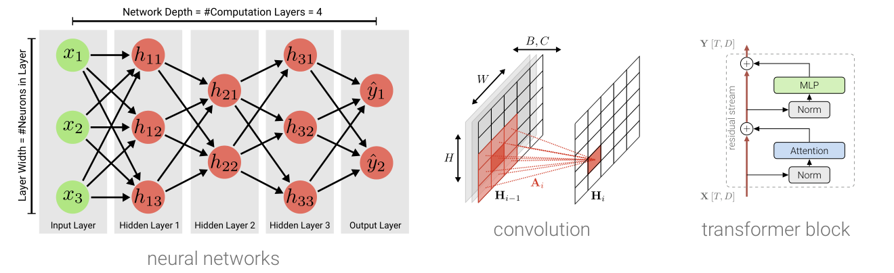

Deep Learning – Winter Term 2026/27

This is the website for the Deep Learning lecture at the University of Tübingen in the Winter term 2026/27.
When, where, how
Both the lecture and the tutorial will be held in-person.- Lecture: Wednesday 14:15–15:45, Hörsaal N05, Hörsaalzentrum Morgenstelle.
- Tutorial: Wednesday 16:15–17:45, Hörsaal N05, Hörsaalzentrum Morgenstelle.
- Helpdesk: Thursday 15:00–16:00,
Maria-von-Linden-Straße 1. The helpdesk is run by the tutor of the week,
and the room depends on the tutor.
Exceptionally, students who cannot be in Tübingen at the start of the semester
can join the helpdesk via Zoom: please send an email to the tutor of the week.
- until 29.10.2026: Naama Pearl, room A-414
- 05.11.–03.12.2026: Glenn Angrabeit, room A-416 (no helpdesk on 19.11.2026)
- 10.12.–17.12.2026: Naama Pearl, room A-414
- 14.01.–04.02.2027: Yong Cao, room A-411 (online on 21.01.2027)
- Lecturer: Sebastian Bordt.
- First lecture: 14.10.2026
- First tutorial: 14.10.2026
- Credits: 6 ECTS.
There will be no lecture / tutorial on 18.11.2026 and on 09.12.2026.
Team
- Lecture: Sebastian Bordt.
- Tutorials: Yong Cao, Naama Pearl and Glenn Angrabeit.
Qualification Goals
In this course, students gain an understanding of the theoretical and practical concepts of deep neural networks, including optimization, inference, architectures and applications. After the course, students should be able to develop and train deep neural networks, reproduce research results and conduct original research in this area.
Overview
Each week consists of a lecture followed by a tutorial. The lecture introduces new material; the tutorial is hands-on and covers live-coding sessions, quizzes, old exam exercises, and programming tips and tricks. There is a 30-minute break between the two sessions (15:45–16:15).
- Lecture: new material, examples and discussion.
- Tutorial: a new exercise sheet is handed out and introduced, or the solutions to the previous one are discussed.
- Helpdesk: once per week, on Thursday 15:00–16:00 in Maria-von-Linden-Straße 1 (the room depends on the tutor, see above), where our TAs provide individual support.
- Forum: we use the Ilias forum for questions about the lecture and the exercises. You are also welcome to ask in person in the break after the lecture.
- Exam: a written exam at the end of the semester. To take part, you need to participate in at least 3 of the 5 quizzes on Ilias (see below).
Prerequisites
Basic programming skills (Python) and a solid background in linear algebra and probability. Prior exposure to machine learning is helpful but not strictly required.
Registration
Please register in the Ilias course. This is how we send announcements about the class, and the quizzes that you need for the exam (see below) take place in Ilias.
- Ilias course: Deep Learning – Winter Term 2026/27
Exam and Exam Admission
- Exam registration is in Alma. If you do not have an Alma account by the registration deadline, please send an email to Patrizia Balloch (tml-sekretariat(at)inf.uni-tuebingen.de) with your name, matriculation number and field of study.
- Exam date: not yet known. It will be published on this website.
- Quizzes: throughout the semester, there will be 5 quizzes on Ilias. These are simple quizzes with basic questions about what is happening in the lecture. The quizzes will be announced in the lecture and on this website.
To participate in the exam, you need to participate in at least 3 of the 5 quizzes. It is therefore very important that you complete these quizzes!
Exercises
There are six exercise sheets over the semester. Each sheet runs for two weeks; the first one is handed out in the first week. The sheets contain pen-and-paper and coding tasks.
- Nothing has to be handed in. We publish the solutions and discuss them in the tutorial.
- You can work in groups of up to 4 students.
- Solving the exercise sheets yourself is the best preparation for the exam.
Schedule
Lectures and tutorials take place on Wednesdays. The slides and exercise sheets are linked in the table as they are released.
Google Drive: course folder
| Date | Lecture | Exercise |
|---|---|---|
| 14.10.2026 | Introduction Slides (PDF) |
Intro to EDF Tutorial slides (PDF), Exercise sheet 1 (PDF), code (zip) |
| 21.10.2026 | Computation Graphs Slides (PDF), Backprop 1D (interactive) |
Intro to EDF Tutorial slides (PDF), notebook (ipynb) |
| 28.10.2026 | Deep Neural Networks I | Classification |
| 04.11.2026 | Deep Neural Networks II | Classification |
| 11.11.2026 | Regularization | Regularization |
| 18.11.2026 | no lecture and no tutorial | – |
| 25.11.2026 | Optimization | Regularization |
| 02.12.2026 | Convolutional Neural Networks | CNNs & Sequence Models |
| 09.12.2026 | no lecture and no tutorial | – |
| 16.12.2026 | Sequence Models | CNNs & Sequence Models |
| 23.12.2026 – 06.01.2027 | Christmas break | – |
| 13.01.2027 | Language Models | Transformers |
| 20.01.2027 | Scaling | Transformers |
| 27.01.2027 | Image Generation | Diffusion |
| 03.02.2027 | Image Generation | – |
Recordings
The lectures will not be recorded. However, there are recordings of the Deep Learning lecture by Andreas Geiger from the winter term 2020/21. Up to the lecture on convolutional neural networks (02.12.2026), they cover similar – but not the same! – material. After that, the content of this year's lecture is completely different. We recommend that you attend the lecture. If this is not possible, the recordings can be useful in the first half of the semester, but not after that.
Questions?
During the semester, please use the Ilias forum – questions asked there help everyone. Only in case of urgent questions, please contact Sebastian Bordt.
Feedback
We welcome comments and feedback about the class, please talk to us after the lecture or tutorial. The anonymous feedback form is currently not available because of a PHP security exploit on the web server.